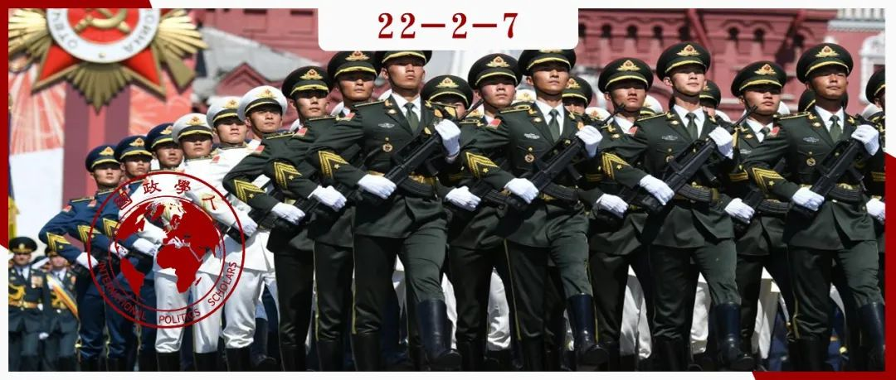

收录于合集 #《国际关系前沿》2022年第2期 8个

作品简介 ****
作者： 帕特丽夏·金（Patricia M. Kim），普林斯顿大学政治学博士，现任布鲁金斯学会David M. Rubenstein研究员。她的研究兴趣包括中国外交、中美关系、美国的东亚联盟体系和东亚安全态势等。她在包括Foreign Affairs、Foreign Policy等杂志，和包括《纽约时报》、《华盛顿邮报》和《南华早报》等媒体上发表过多篇文章。她也经常在美国国会作证。
编译： 徐一凡（国政学人编译员，斯坦福大学东亚研究中心）
来源： Patricia M. Kim, “China’s Search for Allies: Is Beijing Building a Rival Alliance System?” Foreign Affairs , November 15, 2021.
归档： 《国际关系前沿》2022年第2期，总第41期。

导读
本文是一篇研究联盟政治的文章，对中国的潜在联盟网络做出评估，并就其结盟策略的趋势做出分析。因为其政策性的本质，所以主要采取了定性方法，通过对中国结盟策略的历史回顾和作者本人的分析和判断力之行使来论述。作者认为，由于外部安全环境的恶化以及中国自身的战略雄心的增长是促使中国构建自己的联盟体系的重要原因。而事态正在向这两个方向发展，所以中国很可能将现有的战略伙伴关系发展成为真正的联盟关系。
在中国的海外利益逐渐扩大之际，如何保护和促进中国的全球利益逐渐成为中国对外政策的重要课题。其中，结盟政策成为讨论的中心议题，也是本文的焦点。中国是否要放弃不结盟政策也确实是中国目前面临的抉择，也是国际社会关注的热点。本文作者通过对中国战略思考细致的分析，和经济、政治、军事等多方面的考察给出了一个经验上合理，逻辑上自洽的解答。特别值得注意的是，作者不但从中国一侧看问题，而且还考虑到了中美互动的视角，即美国日益紧密的联盟关系会对中国的结盟策略有什么样的反作用。
面对挑战，中国正试图以更灵活的方式应对，亦或是组建“联合阵线”。作者认为，中国的战略合作伙伴关系可能是一种折中之策，不是正式盟友关系所以不至于过多刺激美国进而招致更多的“围堵”，但也能在很大程度上缓解安全压力和扩展海外影响力。在和平时，这些伙伴关系能够成为中国经济扩张的政治基础；在战时，俄罗斯等战略合作伙伴则能够成为战略大后方，为中国提供重要资源（如油气）和情报支援等。这可能在某种程度上比共同防御和盟友关系更加有用，因为并非共同作战，所以战事初起时战略后方可能不会直接招致敌人的打击，从而可以持续为前线提供支援为动员争取时间。但是，这到底是联盟体系的替代品，还是通向联盟体系的一环，还需要时间的检验。
国政学人特编译此文，将美国学者对中国不结盟政策的分析予以呈现，文章不代表国政学人平台观点。
摘要
在中美竞争日益激烈的当下，中国愈发显现出要建立一个能与美国及其盟友抗衡的联盟体系的倾向。尽管中国现在几乎没有正式盟友，但其经营的“伙伴关系”在必要时候可以成为建立联盟体系的基础。虽然中国现在并没有采取行动，但如果中国面临的安全形势进一步恶化，或者中美关系进一步恶化，那一个中国领导的对抗美国的联盟体系的出现就可能成为现实。对于一些传统与美国交好的国家，中国就算没办法让他们转换门庭，也可以将他们“芬兰化”以抵消美国的影响力。同时也要注意，虽然中国的结盟政策如何发展主要取决于中国的战略规划，但美国日益拉近与其盟国的关系可能会刺激中国采取进一步行动。
编译
01
引言
美国的联盟体系长期以来都是其对外政策的中心支柱， 特别是近年在中美日益激烈的竞争中发挥了重要作用。拜登政府在其亚洲战略中尤其重视盟友的作用。在其执政的第一年中，拜登政府不仅巩固了与包括日本和韩国在内的长期以来的盟友的关系，还投入了大量精力巩固多边关系，包括四边安全对话（美日印澳）和AUKUS（美英澳）等。
相反，中国 则基于其不同的国际关系观和避免陷入纠纷的务实态度， **避免与其他国家建立正式联盟 关系。但已有迹象表明，中国对不结盟的坚持已经有所减弱。**近年来，中国已经和包括俄罗斯、巴基斯坦和伊朗在内的许多国家提升了战略伙伴关系水平，加强了军事交流并增加了联合军演次数。鉴于美国的联盟体系涵盖了共同防御条款、海外驻军协议和联合军事能力，中国的这些伙伴关系和美国的联盟体系还相去甚远。但如果中国认为，为了在与美国及其盟友的长期竞争中获胜，有必要构建自己的联盟体系以提升其威慑能力和作战价值时，这些伙伴关系就能成为中国联盟体系的基础。这一新发展是时下中美竞争的一个真正的转折点，预示着地区内和大国间发生冲突的门槛更低的新世界政治即将到来，不禁令人担忧。
02
中国建立自己的联盟网络
当下，中国只有朝鲜一个“正式盟友”，双方签有相互防御条约。但中国在世界上有许多的官方伙伴关系。其中，中国最重要的两个伙伴国家是俄罗斯和巴基斯坦。随后是一些东南亚国家，如缅甸、柬埔寨、越南、泰国和老挝，以及一些地理位置更遥远的国家，比如埃及、巴西和新西兰。中国也在建立和完善中国领导的多边机制中投入了很多精力，包括上海合作组织，中非合作论坛和中国- 阿拉伯国家合作论坛。
迄今为止，中国一直避免建立传统的联盟 体系，原因包括长期存在的意识形态倾向和务实的战略考虑等。自新中国成立以来，中国一直希望把自己塑造成发展中世界的引领者，以及“不干涉”和“反帝”等不结盟运动原则的支持者。近年，中国认为他们正在实践一种能够回避传统权力政治且有利于双赢合作的“新型国际关系”。这是为了支持“中国的崛起不应被惧怕，而应被视为有利于全球发展和繁荣”的主张，并将其与持有过时的“冷战思维”的美国区别开来。
除了这种公共外交努力之外，中国的“回避联盟”（alliance- shy）姿态也反映了中国为了追求权力和全球影响力，以经济关系为中心建立对外关系的战略决策。但这并不意味着中国在外交方略上只会运用经济方法达到目的。事实上，中国在过去二十年间军事实力迅速增长，并将其运用在台海、东海、南海和中印边界纠纷上。但即便中国认识到了军事实力的重要性，但其却不愿意对外国承担过多安全责任，以免将自己拖入不必要的纷争之中。
取而代之的是，中国在为其他国家提供贷款、投资和贸易机会方面下了很大功夫。而且，只要是主权国家，无论其政府性质和执政记录如何，中国都愿意与其做生意，并且认为这将为其赢得朋友和影响力。事实证明这一战略确实行之有效。中国的许多伙伴国家，特别是发展中国家，都非常欢迎这种模式，并且给予回报以支持中国的核心利益。这些支持首要表现在外交方面，比如对中国的少数民族政策、国家统一以及对联合国多边框架的肯定表示支持。在经济激励之外，中国也对澳大利亚等不太友好的国家采取提高关税等措施。
03
变化中的中国战略考量
近期内，中国不太可能完全放弃以地缘经济实力博取地区主导权的做法。但 **在两种情形下中国或许会转而建立真正的联盟 体系：第一，中国认为其安全环境已经恶化到让其不顾成本和收益的考量而不得不追求正式联盟条约；第二，中国决定不仅在印太地区，而是在全球范围内取代美国的军事强权。**如果中国认为，没有正式盟友就无法保证中国的核心利益的话，那中国就可能会做出上述之结论。
事实上，中国对局势的判断已经有如此发展的趋势了。 比如，中国对中俄不断深化合作给出的解释就是为了应对西方国家的不断“围堵”（encirclement）。尽管两国过去的恩怨纷扰可能会在某种程度上限制两国的合作水平，但只要两国都认为有现存的威胁，他们就有可能在灰色地带和常规军事行动上达成相当程度的共识和合作。
中国与朝鲜、伊朗等国家的深化合作也是一例。中国近年来对朝鲜的评价有明显提高，与几年前尽力疏远朝鲜时明显不同。2020年7月，中朝两国续签了共同防御条约并声称将将两国关系提升到“新高度”。同时，中国还和伊朗签署了为期25年的合作协议，提供经济合作与投资以换取伊朗的石油。而且，中国还同意了伊朗加入上合组织的申请。伊朗15年前就递交了申请，但据称中国为了避免刺激美国而将其束之高阁。尽管中国传统上为避免被诸如伊朗和朝鲜这样的国家牵扯纠缠，也为了维护自身形象考虑并没有和它们走的太近，但在中国看来愈发敌对的外部环境使其不得不尽快锁定更多的盟友。
中国很可能认为，在可预见的未来，保护自身利益应对美国的最好方法，就是构建一支不可忽视的军事力量和自己的联盟 体系，正如美国70年前所做的那样。当然，对美国有样学样并不简单。毕竟，大多数发达国家已经是美国的正式盟友了。即便是与中国关系最为紧密的“一带一路”伙伴国也会怀疑中国的真实目的和可能的霸权倾向。许多国家已经明确表示不会在中美之间选边站，但现状迟早有被打破的一天。中国正在巧妙地经营与发达国家和发展中国家的关系，并企图离间美国与其盟友间的关系。即便中国可能无法使美国的盟友改换门庭，但却可以使朝鲜半岛和东南亚等战略要地“芬兰化”，强迫他们切断与美国的战略联系。
04
结论： 联盟 及其影响
在如今的权势变化和战略竞争的时代，拜登政府为重铸美国联盟体系并提高其盟友对亚太地区安全的贡献所做出的努力是非常重要的。 但拜登政府也要明白，美国及其盟友越是往“21世纪新愿景”（new 21st century vision）和“一体化威慑”（integrated deterrence）努力，中国就越有可能与其自己的战略伙伴试图达成类似的目标。
这并不是说美国应该疏远盟友以期能安抚中国。毕竟，中国的战略选择是基于其自己的战略视角和雄心决定的。话虽如此，拜登政府还是要考虑其在团结盟友上取得的成果会在何种程度上会影响中国的威胁感知，并不自觉地促使中国也建立自己的联盟体系。
美国是时候认真思考如何应对了。当然如果能避免中国走向“结盟”的这种情况的发生是最好不过了。美国应该仔细考虑如何让中国继续保持和美国及其盟友间的稳定关系，并确保和各国保持接触。这不仅应该包括理念相近的国家，还应该包括那些在美国传统朋友圈之外但还没下定决心与中国“结盟”的国家。美国的战略远见和规划将至关重要，可以防止走向一个真正分裂的世界，防止出现一个由更纠缠不清、更强势的中国领导的对立集团。
词汇整理
围堵、围剿 encirclement
流氓国家 rouge state
芬兰化 Finlandization
一体化威慑 integrated deterrence
审校 | 黄慧彬 谭伟业
排版 | 叶拯 黄伊蕾
文章观点不代表本平台观点，本平台评译分享的文章均出于专业学习之用, 不以任何盈利为目的，内容主要呈现对原文的介绍，原文内容请通过各高校购买的数据库自行下载。

国政学人
支持学术公益与知识传播
微信扫一扫赞赏作者 __赞赏
已喜欢，对作者说句悄悄话
取消 __
发送给作者
发送
最多40字，当前共字
上一页 1/3 下一页
长按二维码向我转账
支持学术公益与知识传播
受苹果公司新规定影响，微信 iOS 版的赞赏功能被关闭，可通过二维码转账支持公众号。